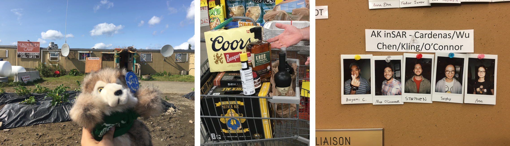
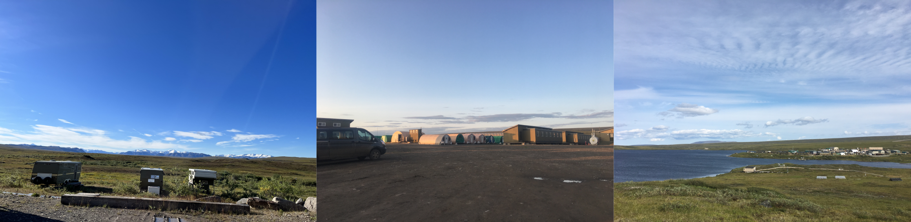
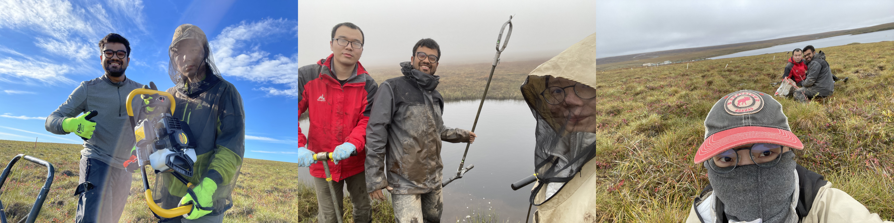
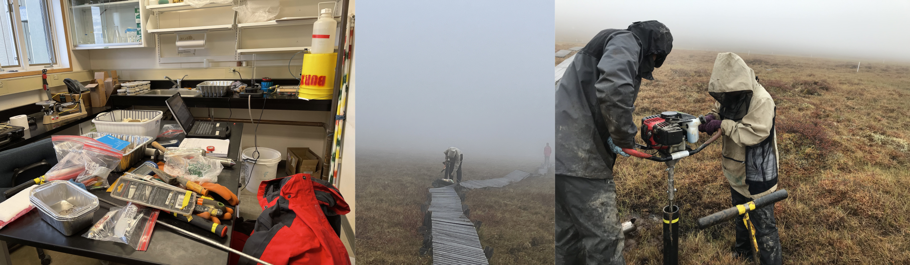

2018 was the year I visited Alaska for the first time in my life. We stayed at Fairbanks for a few days to buy gear (and beers). After that, we drove up north to Toolik Field Station. We were a small group of 3 researchers in 2018. Mike and Stephen were graduate students in the Cardenas Hydrology Research Group at UT Austin, and I am from the Radar Interferometry Group, also at UT Austin. In 2019, with the two supervisors (Bayani and Ann) joining the campaign, we became a larger group of 5 researchers.

The Toolik Field Station locates in the continuous permafrost of the upper Kuparuk River Basin near Toolik Lake on the North Slope of Alaska. This region preserves the juxtaposition of two major permafrost soil types commonly found in the Northern Hemisphere: acidic soils on older glaciated surfaces and nonacidic soils on more recently glaciated surfaces. Because of this unique hydrogeologic setting, the Toolik area has a long history of research starting in 1975, with the NSF Arctic LTER (Long-Term Ecological Research) established at Toolik Lake in 1984. The availability of the long-term databases of many basic parameters of the permafrost system makes it an excellent site for studying how different soil types control hydrological dynamics and may change as the climate warms and permafrost thaws.

When we were at the field station, we lived in tents. A fascinating tradition is that the field station gives everyone a mug and asks us to put a nickname on it. When we were out for field work, we left our mugs to hang on the wall. There is a chance of meeting other species living in this area, such as moose, caribous, foxes, and bears. Most of the time, animals try not to have close contact with humans. However, we still brought bear sprays whenever we left the field station, although most of the researchers I asked told me they were unsure how to use the spray. We noted the location and time on the animal sighting board when we observed the animals. In this way, researchers who are studying the animals can go and visit, and researchers who are going to work in that region will be aware of any potential dangers.
For the fieldwork in 2018 (August 14 – August 25) and 2019 (July 25 – August 3), our key goals were:
1. Understand more about the hydrological properties of the surface soil layer on top of the permafrost (active layer);
2. Map soil stratigraphy and study how it changes with slope and land vegetation cover types;
3. Calculate soil water content, study how it varies in space, and compare the result with InSAR-estimated soil water content.
To achieve our goals, we planned to visit as many field sites as possible and collect soil core samples. During our field trips, most of the time, we went to sample sites on foot. It usually took us from 9 in the morning to 4-5 in the afternoon to visit 10-20 sample sites. At each sample site, we would dig one soil pit. The soil pit is about 20-20cm. We collected 1-4 soil core samples from each soil pit. The soil core samples weigh about a pound each. Sometimes when we could use the helicopter, we went to places far away to cover a larger area. We finally visited more than 200 field sites and collected more than 200 soil core samples. The field data was vital for proving that InSAR surface deformation estimates are directly related to the amount of soil water in the active layer, and led to a regional estimation of soil water storage map calculated from InSAR-observed surface deformation.

We were supposed to visit Toolik for the third time in 2020 if not affected by COVID. However, we postponed our plan and decided to return in 2022. Also, because the field station lacked medical service, researchers were required to quarantine at Fairbanks for 14 days before we could head north to the field station.
I became the field campaign's leader this time, with Ke and Neelarun being my groupmates. Ke is also from the Radar Interferometry Group, and Neel is from the Cardenas Hydrology Research Group. Although they were both first-time visitors to Alaska, they were curious and hard-working while we were in the field.

Although we only had five days at the field station, we had multiple goals this year:
1. Install permanently, fully-screened observation wells so the water table can be spot-checked intermittently throughout the thaw season;
2. Collect soil core and field measurements, including thaw depth (ice table), saturated thickness (water table), stratigraphy, and hydraulic conductivity;
3. Visit the 2007 Anaktuvuk River Fire Scar and conduct soil core sampling and field measurements.
The weather was terrible, chilly, rainy, and foggy while we were there. But the group managed to overcome all these. During this field campaign, we visited the fire scar for the first time and observed very different soil profiles from what we saw before near Toolik Lake. We also improved protocols for installing piezometers into the permafrost. We installed 32 wells in the Tussock Watershed thaw grid and the Imnavait thaw grid as planned (thanks to George, Jason, and their group members). Hopefully, the wells will provide us with long-term groundwater level monitoring. We visited a total of 46 field sites and collected 30 soil core samples from Tussock Watershed, Imnavait Watershed, and the 2007 Anaktuvuk River Fire Scar. Our field sites spread from the hillslope to the riparian zone, tracing the sub-ground water tracks. The field sites also covered various land vegetation cover types. We are looking forward to the exciting results of this year's field campaign.
